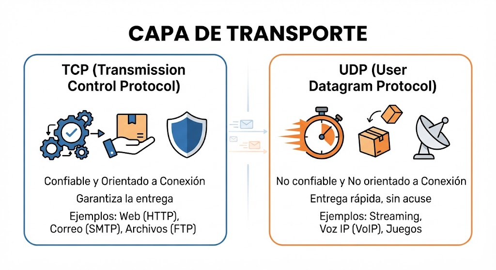
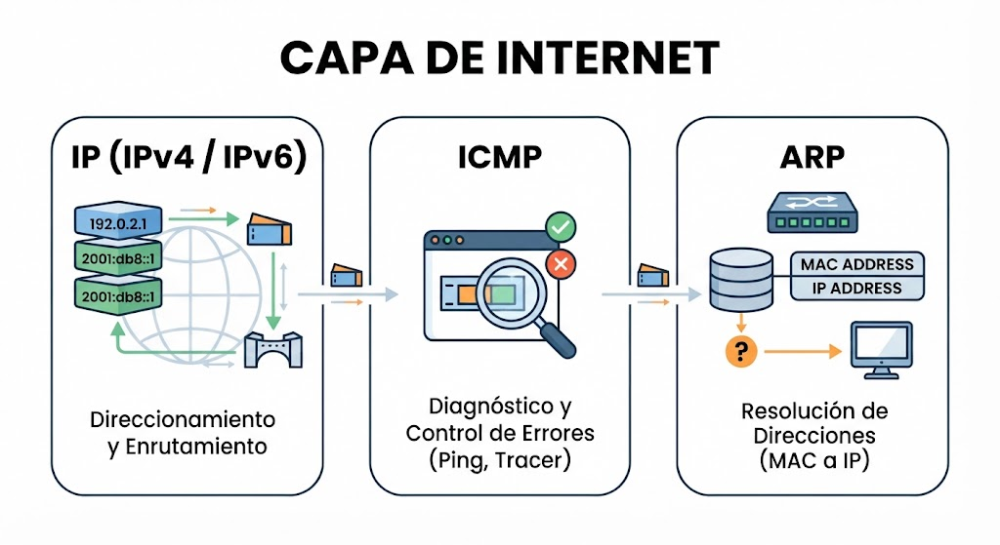
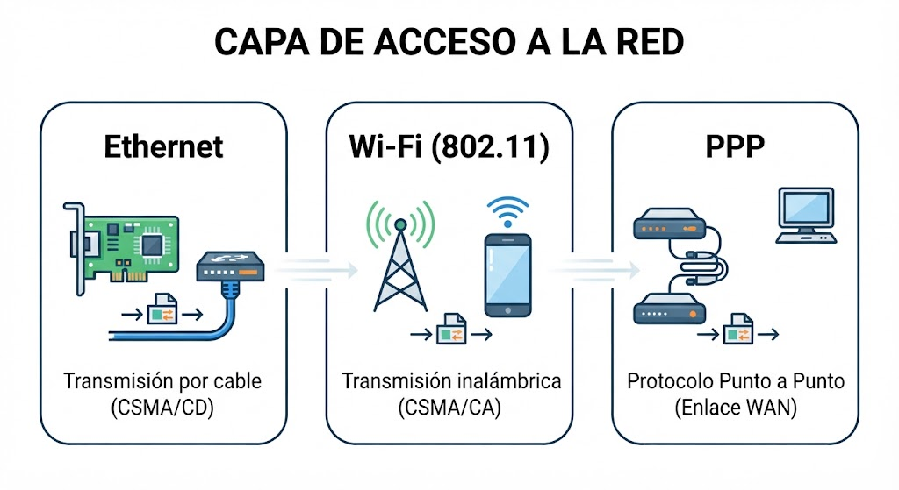

1. Origen y Necesidad del Modelo TCP/IP
A finales de la década de 1960, la agencia DARPA creó ARPANET para resolver la interoperabilidad de redes:
- Incompatibilidad de fabricantes: Los sistemas propietarios no podían comunicarse entre sí.
- Vulnerabilidad de redes centralizadas: La conmutación de circuitos requería una ruta fija susceptible a cortes.
Conmutación de paquetes: La información se divide en unidades independientes que buscan dinámicamente la mejor ruta hacia el destino.
Capa 4 — Datos
Aplicación
Interfaces y servicios de red directos para las aplicaciones de usuario.
HTTP (80)
HTTPS (443)
MySQL (3306)
DNS (53)
SSH (22)
Capa 3 — Segmentos / Datagramas
Transporte
Comunicación extremo a extremo entre procesos de software mediante puertos lógicos.
TCP (Orientado a conexión / Fiable)
UDP (Sin conexión / Rápido)

Capa 2 — Paquetes
Internet
Direccionamiento lógico IP y determinación de rutas a través de routers.
IPv4
IPv6
ICMP
ARP

Capa 1 — Tramas / Bits
Acceso a la Red
Direccionamiento físico MAC y transmisión mediante impulsos en el medio físico.
Ethernet (802.3)
Wi-Fi (802.11)
Direcciones MAC

2. Práctica de Diagnóstico en Terminal
Comandos para inspección de la pila de red:
:: Conectividad y pruebas ICMP
ping 127.0.0.1
ping google.com
:: Tabla ARP (Mapeo IP - MAC)
arp -a
:: Conexiones TCP activas y puertos en escucha
netstat -an
:: Rastreo de ruta punto a punto (Trazado de paquetes)
tracert google.com
3. Encapsulamiento de Datos (PDU)
- Capa 4 (Aplicación): [ Datos ]
- Capa 3 (Transporte): [ Header TCP/UDP | Datos ] → Segmento
- Capa 2 (Internet): [ Header IP | Header TCP | Datos ] → Paquete
- Capa 1 (Acceso a Red): [ Header Ethernet | Header IP | Header TCP | Datos | Trailer ] → Trama / Bits